Laboratorio 13
Integración de mapas en Android Studio
Objetivo:
-
Conocer las diferentes “Interfaces de programación de aplicaciones” (API) que Google ofrece para el uso
en diferentes aplicaciones.
-
Integrar mapas dinámicos a una aplicación en Android Studio mediante el uso del API de Google Maps.
Duración:
Ciento veinte (120) minutos.
Materiales y Herramientas:
Introducción
Una API es un conjunto de funciones y procedimientos que cumplen una o muchas funciones con el fin de ser
utilizadas por otro software. Las siglas API vienen del inglés Application Programming Interface.
Una API nos permite implementar las funciones y procedimientos que engloba en nuestro proyecto sin la necesidad
de programarlas de nuevo. En términos de programación, es una capa de abstracción.
Las APIs de Google permiten la comunicación con las aplicaciones y su integración a otros servicios, como:
-
Buscador
-
Gmail
-
Traductor
-
Google Maps
MAPS
Permite a los usuarios visualizar el mundo real, por medio de mapas estáticos o dinámicos, que pueden ser
personalizados e incorporados a sitios o aplicaciones.
-
SDK de Maps para Android: permite agregar mapas con base
en los datos de Google Maps a una aplicación para Android.
-
SDK de Maps para iOS: permite agregar mapas con base en
los datos de Google Maps a una aplicación para iOS.
-
API JavaScript de Maps: permite agregar mapas
interactivos y personalizarlos con propio contenido e imágenes para exhibición en páginas de la web y
dispositivos móviles.
-
API Static de Maps: permite incorporar una imagen
estática de Google Maps a un sitio web, sin la necesidad de usar JavaScript o cualquier cargamento
dinámico de la página.
-
API Street View: permite incorporar un panorama o una
miniatura estática (no interactiva) de Street View a una página Web, sin el uso de JavaScript.
-
URLs de Maps: permite crear una URL universal entre
plataformas, que posibilita abrir Google Maps y realizar búsquedas, teniendo acceso a rutas, mapas e
imágenes panorámicas.
ROUTES
Ayuda a los usuarios a encontrar el mejor trayecto hasta su destino, con la sugerencia de rutas y actualizaciones
de tránsito en tiempo real. Además, también permite crear itinerarios hasta de 25 puntos de referencia.
-
API Directions: permite proporcionar rutas de transporte
público, bicicleta, auto y a pie.
-
API Distance Matrix: proporciona la distancia y el tiempo
de viaje entre los puntos de origen y de destino de una ruta recomendada.
-
API Roads: posibilita crear itinerarios precisos,
determinando el trayecto a ser recorrido, además de proporcionar datos al respecto de esas rutas, como
el límite de velocidad.
PLACES
Places ayuda a los usuarios a conocer y explorar el mundo a su alrededor. Con datos de millones de lugares,
posibilita encontrar locales específicos, usando números de teléfono, direcciones o nombres de
establecimientos.
Es una óptima forma de facilitar a los consumidores a encontrar una empresa, teniendo acceso a informaciones
detalladas sobre el negocio, como nombre del local, dirección, evaluaciones y datos de contacto.
-
API Places: exhibe información actualizada sobre millones
de locales usando solicitudes HTTP. Los locales son definidos dentro de esta API como establecimientos,
localizaciones geográficas o puntos de interés.
-
API Geocoding: permite convertir direcciones en
coordenadas geográficas o viceversa.
-
API Geolocation: permite encontrar la localización de un
dispositivo con base en datos proporcionados por torres de celular y puntos de Wifi.
-
API Time Zone: permite ver la zona horaria de una
coordenada específica de latitud y longitud.
-
API Elevation: proporciona datos de elevación de
cualquier punto del mundo, incluyendo la profundidad, como el fondo del océano (que devuelve valores
negativos).
Investigación
Pregunta 1: Mencione al menos 5 APIs de Google diferentes a la de Maps y explique cada una de ellas.
Pregunta 2: Escoja una de las APIs de la pregunta anterior y explique la implementación de alguna función de
dicha API.
Procedimiento
Paso 1: Creación del proyecto
-
Crear un nuevo proyecto con el nombre Lab13TLM, el Activity será vacío y con versión mínima para
Jelly Bean.
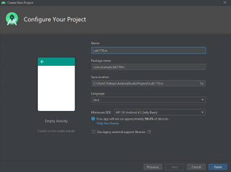
-
Agregar un Activity nuevo de tipo Maps en la sección de Google.
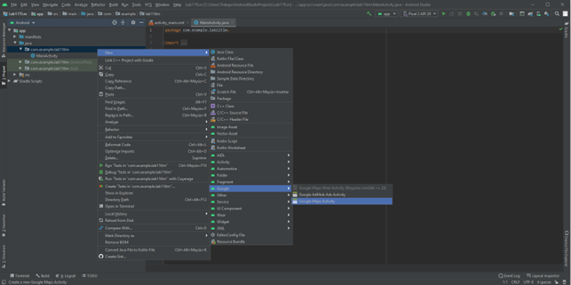
-
En la nueva ventana que se abre, dejar los valores por defecto y dar en Finish.
Paso 2: Crear claves de Google Maps y habilitar APIs
-
Abrir el enlace https://console.developers.google.com/ en un
navegador web e ingresar con sus credenciales de una cuenta de Google (Gmail).
-
Crear un nuevo proyecto, de preferencia crearlo con el mismo nombre del proyecto de Android Studio y en
la sección de Ubicación dejar como “Ninguna organización”.
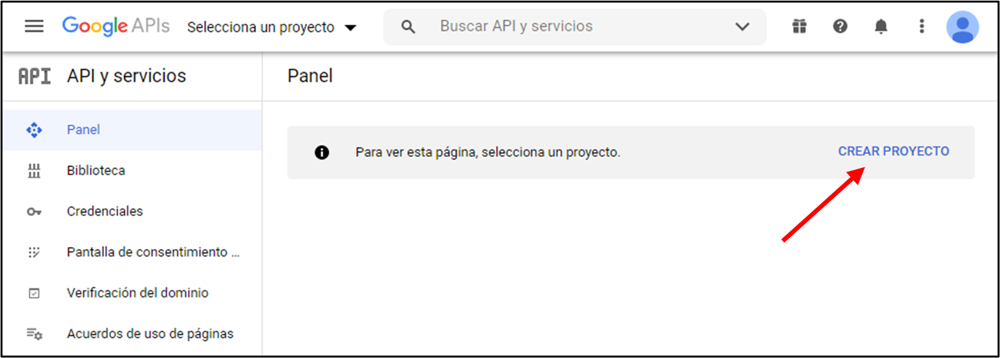
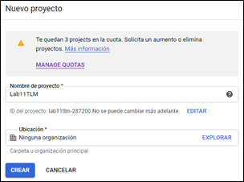
-
Seleccionar la opción Credenciales en el panel lateral izquierdo.
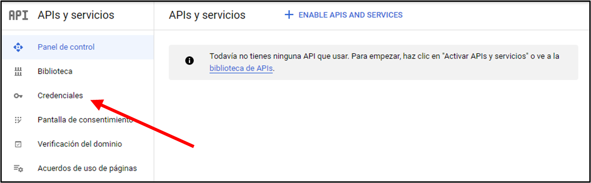
-
Dar clic en “CREAR CREDENCIALES” y luego en “Clave de API”
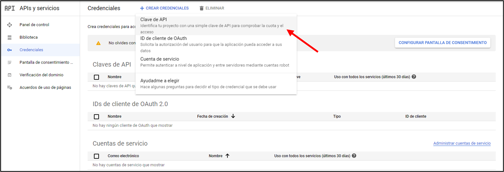
-
Copiar la clave creada y colocarla en el proyecto de Android Studio, en el archivo google_maps_api.xml,
casi al final del archivo donde dice YOUR_KEY_HERE.
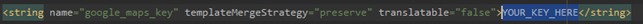
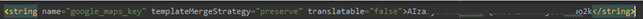
-
Volver al navegador web y dar clic en RESTRINGIR CLAVE
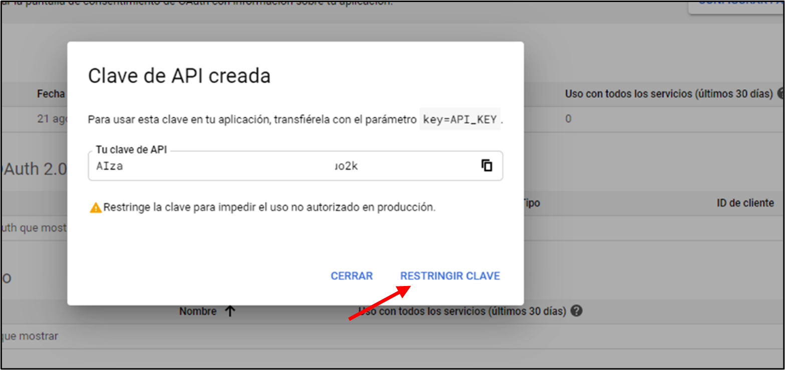
-
En caso de haber cerrado la ventana del literal anterior, puede dirigirse nuevamente a la sección de
credenciales y dar clic en el botón para editar la clave API.
En caso de haber cerrado la ventana, puede dirigirse nuevamente a la sección de credenciales y
dar clic en el botón para editar la clave API.
-
En el segmento de Restricciones de aplicación, seleccionar la opción Aplicaciones de Android e ingresar
el nombre del paquete y la huella digital; ambos valores los encontrará comentados en el mismo archivo
XML donde colocó el API KEY del literal e).
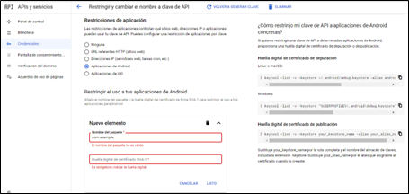
-
Dar clic en LISTO y más abajo clic en GUARDAR.
-
Seleccionar la opción Panel de Control en el menú lateral y luego clic en ENABLE APIS AND SERVICES.
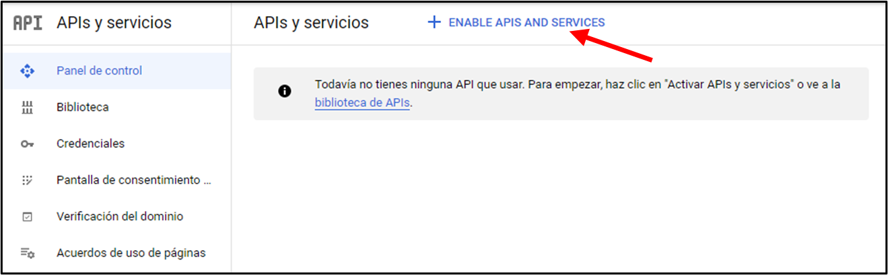
-
Dar clic en VER TODAS (17) del grupo de Maps.
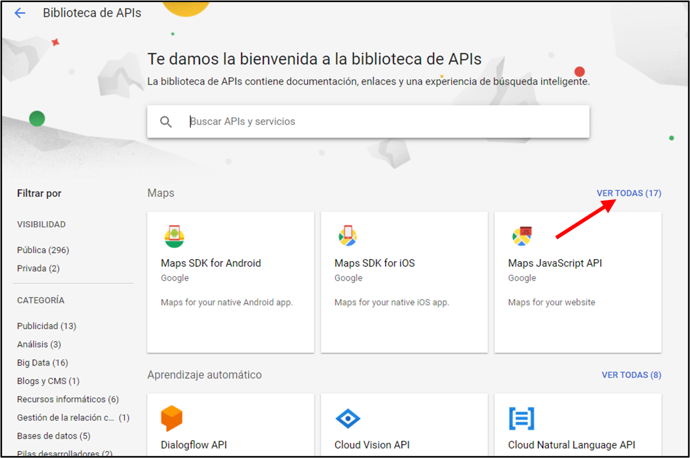
-
Habilitar las 4 APIs marcadas en la siguiente imagen, una por una.
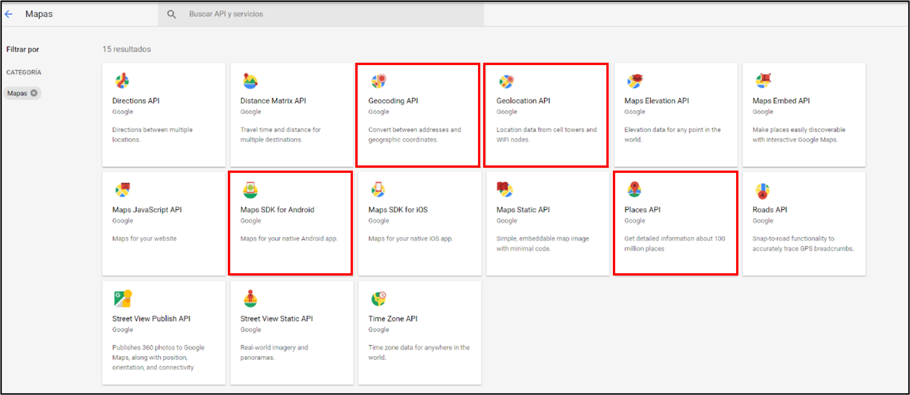
-
Al seleccionar una API, deberá dar clic en el botón HABILITAR y luego regresar a la sección de APIs para
realizar el mismo procedimiento con las demás.
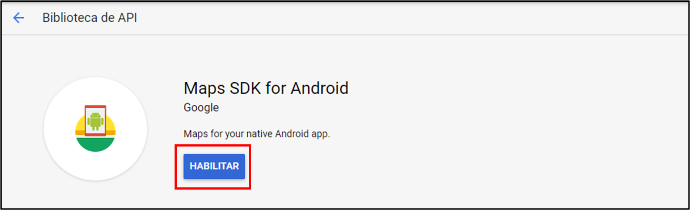
-
Luego de habilitar las 4 APIs deberá regresar al Panel de control y revisar que efectivamente estén
habilitadas dichas APIs
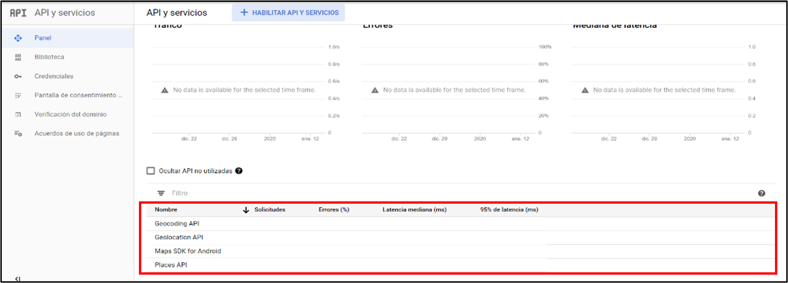
Paso 3: Creación de la aplicación móvil
-
Haciendo uso del proyecto creado en el paso 1, crear dos nuevos Activities, uno de tipo Empty Activity y
otro de tipo Maps Activity, con los nombres “BuscarLugar” y “Ubicacion” respectivamente.
-
Generar los siguientes diseños.
-
Definir las funciones de cada botón del Main Activity y asignarlos a los botones del diseño.
public void consultarUbicacion(View v){
Intent i = new Intent(this,Ubicacion.class);
startActivity(i);
}
public void lugar(View v){
Intent i = new Intent(this,BuscarLugar.class);
startActivity(i);
}
-
En el Activity BuscarLugar, declarar 3 atributos de tipo EditText (et1, et2 y et3) e inicializarlos con
cada uno de los componentes del diseño.
Si al ejecutar la aplicación, ésta se cierra luego de presionar el botón “Encontrar Lugar” es
muy probable que sea debido a que no inicializó bien las variables que apuntan a los EditTexts.
-
Definir la función del botón para que lea los datos ingresados en los EditTexts y los envíe al
MapsActivity.
public void buscar(View v){
Intent i = new Intent(this,MapsActivity.class);
i.putExtra("titulo", et1.getText().toString());
i.putExtra("lat", Double.parseDouble(et2.getText().toString()));
i.putExtra("lng", Double.parseDouble(et3.getText().toString()));
startActivity(i);
}
-
Modificar la función onMapReady del MapsActivity para que ubique un marcador con las coordenadas
ingresadas por el usuario y además tener un acercamiento aceptable del marcador dentro del mapa.
@Override
public void onMapReady(GoogleMap googleMap) {
Bundle bundle = getIntent().getExtras();
mMap = googleMap;
mMap.getUiSettings().setZoomControlsEnabled(true);
LatLng marcador = new LatLng(bundle.getDouble("lat"), bundle.getDouble("lng"));
mMap.addMarker(new MarkerOptions().position(marcador).title(bundle.getString("titulo")));
mMap.moveCamera(CameraUpdateFactory.newLatLngZoom(marcador,10));
}
-
En el Activity BuscarLugar, agregar un botón adicional con el texto “Obtener coordenadas” el cual
obtendrá la latitud y longitud del lugar ingresado por el usuario y los pondrá en los respectivos
EditTexts, para luego mediante el botón Buscar se muestre el lugar encontrado.
El literal g) se lo realiza con el objetivo de que el usuario no ingrese coordenadas, sino que
sólo ingrese un lugar, por ejemplo “Guayaquil” y con el botón “Obtener coordenadas”, la
aplicación solita obtenga las coordenadas y el usuario mediante el botón “Buscar” pueda
visualizar esa coordenada en el mapa.
-
Definir la función del nuevo botón.
public void obtenerCoordenadas(View v){
Geocoder geocoder = new Geocoder(BuscarLugar.this);
List<Address> list = new ArrayList<>();
try {
list = geocoder.getFromLocationName(et1.getText().toString(),1);
} catch (IOException e) {
e.printStackTrace();
}
if(list.size() > 0){
Address address = list.get(0);
et2.setText(""+address.getLatitude());
et3.setText(""+address.getLongitude());
}
else{
Toast.makeText(this, "No se encontró ningún resultado, intente con otro lugar", Toast.LENGTH_SHORT).show();
}
}
Paso 4: Obtener ubicación del dispositivo móvil
-
Instalar el servicio de localización de Google, dar clic derecho en app -> Open Module Settings
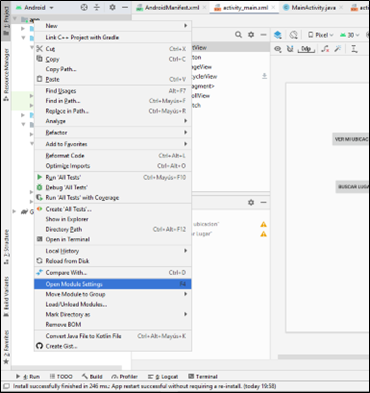
-
En la nueva ventana que se abre, dar clic en Dependencies del panel izquierdo y luego dar clic en el + ,
seguido de la opción Library Dependency para agregar la dependencia.
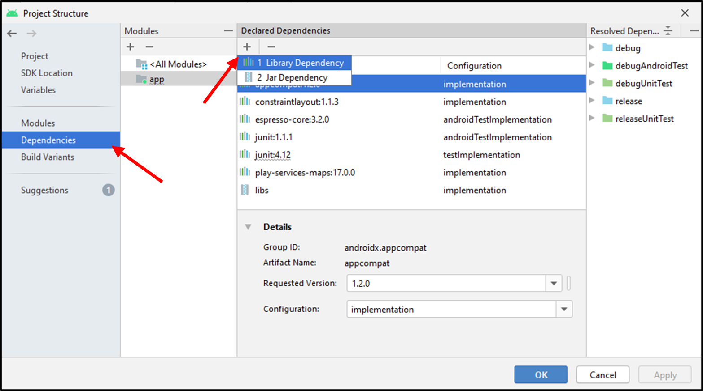
-
En la siguiente ventana, en el buscador colocar play-services-location y dar clic en Search; este
proceso puede demorar un poco.
-
Escoger la versión más reciente, dar clic en OK y nuevamente en OK.
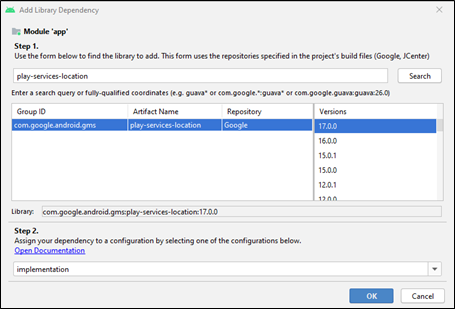
-
Crear el atributo “FusedLocationProviderClient fusedLocationProviderClient” en el MainActivity e
inicializarlo en la función onCreate como se muestre en la imagen.
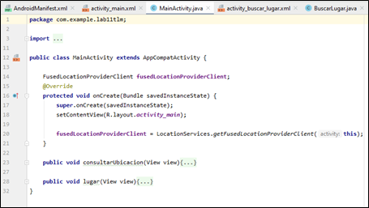
-
Editar la función consultarUbicación con el siguiente código
public void consultarUbicacion(View view) {
if (ActivityCompat.checkSelfPermission(this, Manifest.permission.ACCESS_FINE_LOCATION) != PackageManager.PERMISSION_GRANTED){
ActivityCompat.requestPermissions(MainActivity.this,
new String[]{Manifest.permission.ACCESS_FINE_LOCATION},44);
}
else {
fusedLocationProviderClient.getLastLocation().addOnCompleteListener(
new OnCompleteListener() {
@Override
public void onComplete(@NonNull Task task) {
Location location = task.getResult();
if (location != null) {
try {
Intent i = new Intent(MainActivity.this, Ubicacion.class);
Geocoder geocoder = new Geocoder(MainActivity.this, Locale.getDefault());
List list = geocoder.getFromLocation(location.getLatitude(),
location.getLongitude(), 1);
i.putExtra("titulo", list.get(0).getLocality());
i.putExtra("lat", list.get(0).getLatitude());
i.putExtra("lng", list.get(0).getLongitude());
startActivity(i);
} catch (IOException e) {
e.printStackTrace();
}
}
}
});
}
}
-
Modificar la función onMapReady del Activity Ubicacion, debe ser exactamente igual a la función
onMapReady del Activity MapsActivity.
-
Ejecutar el código, la primera vez que se presione el botón Ver mi Ubicación, pedirá permiso para
acceder al GPS, concedemos el permiso y volvemos a presionar el botón Ver mi Ubicación.
Paso 5 (Opcional): Configuración del emulador Android
-
Iniciar el celular virtual sin ejecutar el código.
-
En el panel derecho, seleccionar los tres puntos para abrir la ventana de controles extendidos.
-
En la nueva ventana seleccionar la opción Location, buscar su posición actual, dar clic en el mapa y
luego dar clic en Set Location.
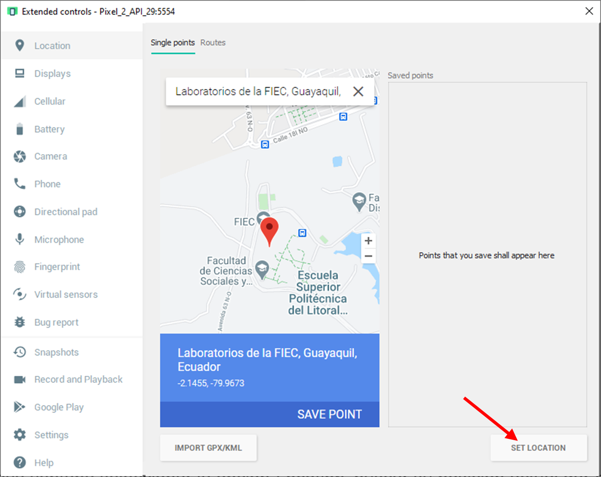
-
Para que se actualice con la nueva ubicación, cierre la ventana y abra Google Maps dentro del celular
virtual.
-
Una vez haya corroborado la nueva ubicación puede ejecutar la aplicación y realizar las capturas
respectivas.